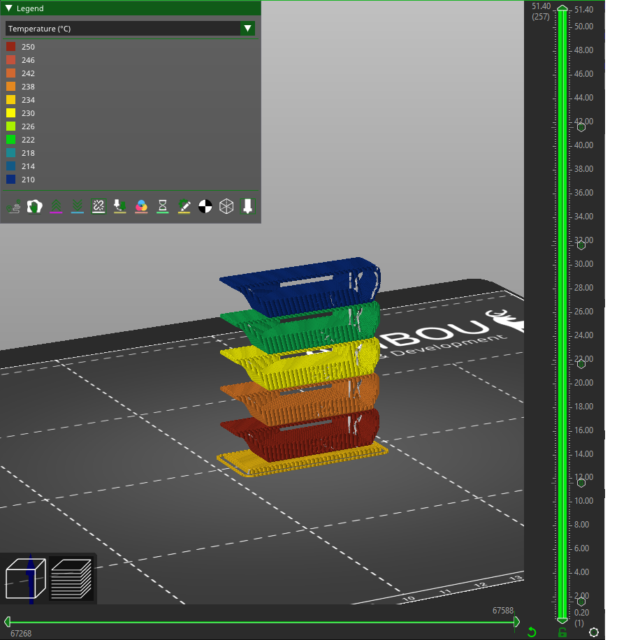

Filament Temperature Calibration |
|||
|
This calibration will help you to choose the right temperature in respect of bonding, overhangs and oozing. Note that this test is dependant of the cooling you selected. You can print this multiple time with more or less cooling to find the sweet spot.
This test will print a tower, printed with a different temperature setting for each floor. You should set select the filament type before generating the tower. The base will be printed with the temperature settings form the filament. The first floor will be printed with the highest chosen temperature. The temperature will be decreased by the chosen delta for each floor.
|  |
The goal is to choose the highest temperature possible that doesn't produce artifacts.
First, you have to analyse the tower. Each floor has the temperature written on it.
|
Too cold, it can't be extruded | |
|
Good | |
|
Good | |
|
Too hot, you can see some ooze | |
|
Too hot, you can see some ooze |
Here you can see that the floor printed with 210 degree celsius is the hottest we can print without disintegration problems (regarding the heat; the bad quality in the pictures is due to high speed). You should try to break the part. In these pictures a chunk of the 195 degree floor was broken off because of missing layer adhesion.
Finally, you want to tear the tower apart to see if the lower temperatures have adverse effects on layer bonding. It shouldn't be possible to tear layers apart with your bare hands. If a floor can be easily delayered, then this floor temperature is definitely too low (or you have had too much cooling due to the fan blowing too much), so you should choose a higher temperature or try again with less cooling. When trying to break one, don't put your hands on the ends of the tower but on the tested floor and the next one, leaving only the bridge gaps between them.
In the case of bad bed adhesion change the temperature in your filament setting (extruder -> other layers), then save it. Then you can generate a new tower with a different temperature region as well.
Most of the calibrations need to be done in the correct order. This one should be third.
This tower is made with the 3D model created by gaaZolee with the CC BY-SA 3.0 licence.